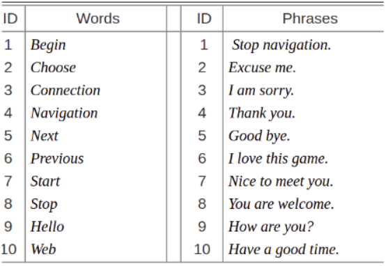
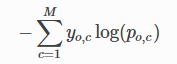

Vision and Language Transformer (ViLT)
The goal of this project is to explore the potential of multimodal model on lip reading task. Vision and Language Transformer (ViLT), which is the simplest architecture by far for a vision-and-language model as it commissions the transformer module to extract and process visual features in place of a separate deep visual embedder, will be deployed for this project. The design of ViLT doesn't have any convolution or regional supervision which leads to significant runtime and parameter efficiency compared to other models. The detailed architecture of ViLT is demonstrated in the following figure.

Model Details
This section will discuss the implementation details and experiment setup of ViLT for this project.
Word Embedder: BERT Tokenizer
BERT uses what is called a WordPiece tokenizer. It works by splitting words either into the full
forms (e.g., one word becomes one token) or into word pieces — where one word can be broken into
multiple tokens.
For example:
| Word | Token(s) |
|---|---|
| snow | ['snow'] |
| snowing | ['snow', '##ing'] |
| snowboard | ['snow', '##board'] |
| snowboarding | ['snow', '##board', '##ing'] |
Visual Embedder: Patch Projection
The idea of patch projection was introduced by Vision Transformer (ViT), ViLT use a 32 x 32 patch projection as visual embedder.
Pre-trained Datasets:
Pre-trained Tasks:
- Image Text Matching
- Masked Language Modeling
- Word Patch Alignment
Dataset: MIRACL-VC1
MIRACL-VC1 will be used as the dataset that is recorded by Microsoft Kinect of 15 people each saying 10 words and 10 phrases 10 times, so there are 3,000 instances in this dataset. In this dataset, each instance is a string of 640×480 pixel color and depth images.

Loss Function: Cross Entropy Loss
Cross-entropy loss, or log loss, measures the performance of a classification model whose output is a probability value between 0 and 1. Cross-entropy loss increases as the predicted probability diverges from the actual label.
- M - number of classes (dog, cat, elephant)
- log - the natural log
- y - binary indicator (0 or 1) if class label (c) is the correct classification for observation (o)
- p - predicted probability observation (o) is of class (c)
Experiment Design:
We will use MIRACL-VC1 to fine-tune the pre-trained ViLT and compare performance with a traditional encoder decoder based architecture baseline (CNN encoder with LSTM decoder). For each word or phrase per speaker, eight instances will be used for fine-tuning, and two will be used for testing. If time permits, we would also record some new instances to test how our proposed model performs with new speakers.